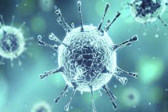

The coronavirus (COVID-19) outbreak has already brought considerable human suffering and major
economic disruption.The effects of the pandemic on economic activity are being felt far and wide, far beyond the airline, travel, tourism and hospitality sectors. Analysts see some impact to the January-March 2020 quarter gross domestic product. But the really deep cut will be seen in the April-June quarter (the first quarter of 2020-21), further exacerbating the slowdown in consumption and activity being witnessed in the Indian Economy.Major effects faced by the world because of this pandemic are,
We(India) are now looking at 4.3 per cent GDP growth for January-March and dropping to maybe 3.9/sub-4 per cent for April-June. The situation is very fluid, these forecasts will keep on changing depending on the sectoral data that we get.
The International Labour Organization estimates that Covid-19 will destroy up to 25 million jobs. According to the United Nations Conference on Trade and Development (UNCTAD), it will likely cost the global economy between $1 trillion and $2 trillion in 2020.
The travel industry has been badly damaged, with airlines cutting flights and tourists cancelling business trips and holidays.
Big shifts in stock markets, where shares in companies are bought and sold, can affect many investments in pensions or individual savings accounts.
Airlines most at risk from EU travel ban.
Restaurant bookings in several countries have almost completely collapsed.
Chinese industrial production fell by 13.5% in the first two months of the year.
Car sales have fallen sharply.
The value of gold is plummeting.

In contrary,coronavirus shutdowns have unintended climate benefits such as cleaner air and clearer water!
“The reduction in traffic and industrial activity caused by COVID-19 has already led to the observation of reductions in some air pollutants across the UK, such as nitrogen dioxide, from space.
Satellites have picked up very large decreases in levels of NO2 (primary from diesels) in all industrial regions of the world. We expect fine particulate matter (PM) has similarly reduced. Big reductions exposure to pollutants will also have come because people are no longer walking on the streets. It is too early to say whether these improvements will offset any of the mortality from Covid-19, or other health problems due to be confined indoors.”
The two-month drop in pollution may have saved more lives in China than the global death toll from the Covid-19 virus, but it should not be considered a “silver lining” of the pandemic.
Other analyses have reported a reduction of ground-based concentrations of fine particulate matter, known as PM2.5, also a harmful pollutant."